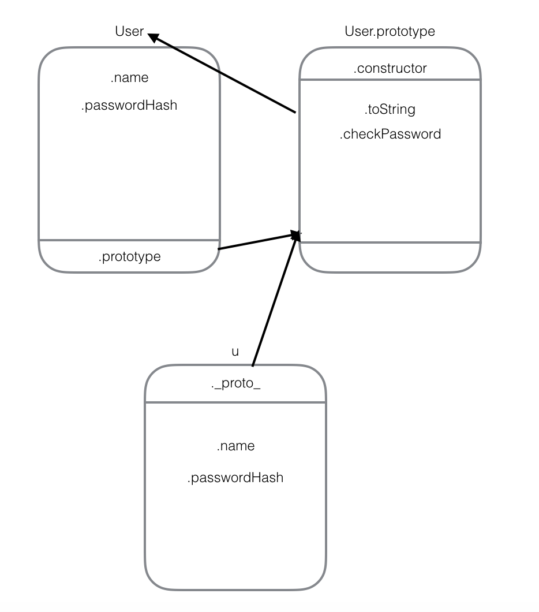
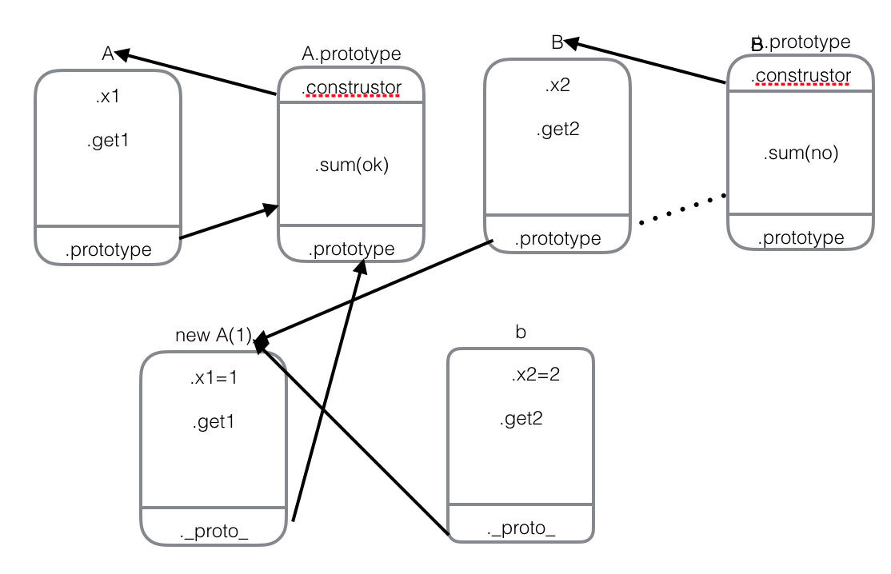
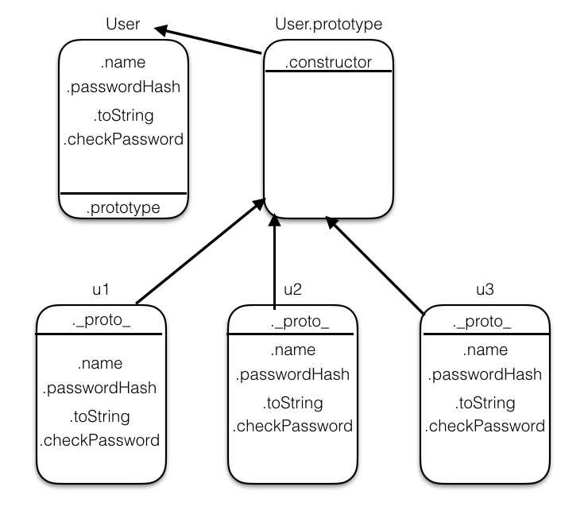
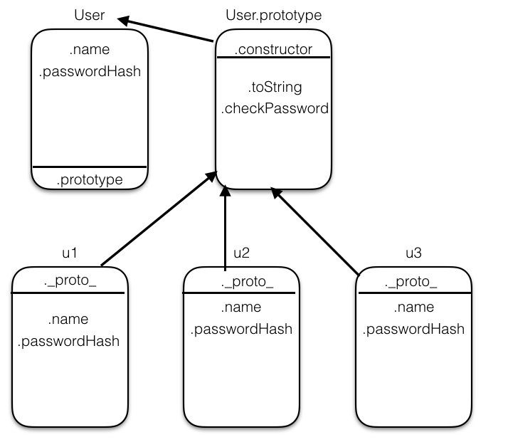

向很多面向对象的语言一样，javascript支持继承。但是又不像一些传统的语言，javascript继承机制是基于原型，而不是类。简单白话理解即：B如果想继承A的属性和方法，只需要把A的一个实例给B的原型链就可以了。
原型有几个独立，但是相关的访问器。
function User(name, passwordHash) {
this.name = name;
this.passwordHash = passwordHash;
}
User.prototype.toString = function(){
return "[User" + this.name + "]";
};
User.prototype.checkPassword = function(password){
return hash(password) === this.passwordHash;
};
var u = new User('test', '97qhjshy8274q298');

通过图片我们可以深入的对以上代码进行分析
我们可以验证一下，对象u自动分配的原型对象是否存储在User.prototype中。ES5中的函数Object.getPrototypeOf(obj)用于检索现有的对象原型。
Object.getPrototypeOf(u) === User.prototype;//true
由此可以验证以上的说法。
从图中我们还可以看出，实力对象u有一个自带的属性proto,这个属性指向 User.prototype
我们可以来验证一下
u._proto_ === User.prototype;//true
由此可说明。这也表明了它们之间的继承关系。
例如当创建u之后，u会在带有u.name ,u.passwordHash的私有属性，但当我们调用u.checkPassword的时候也是可以成功获取到的，这是因为当我们调用一个实力对象的某一属性时，首先在自己的私有属性上找有没有，如果有的话就执行私有的，如果没有就通过proto找到他所属的类的原型链上找定义的公有属性。这便是原型链的继承关系。下面我们通过另一个例子辅助理解。
例二
function A(x) {
this.x1 = x;
this.get1 = function() {
return this.x1;
};
A.prototype.sum = function() {
console.log("ok")
};
};
function B(x) {
this.x2 = x;
this.get2 = function() {
return this.x2 + this.x2;
};
};
B.prototype.sum = function() {
console.log("no");
};
B.prototype = new A(1);
var b = new B(2);
b.sum();//ok-->相当于b.__proto__.__proto__.sum();
console.log(B.prototype.__proto__ == A.prototype); //true

javascript 完全可以不用原型进行编程
例三
function User(name, passwordHash) {
this.name = name;
this.passwordHash = passwordHash;
this.toString = function(){
return "[User" + this.name + "]";
};
this.checkPassword = function(password){
return hash(password) === this.passwordHash;
};
}
以上的程序跟例一的行为几乎是一样的，但是当我们构造多个实例时，一个重要的区别就暴漏出来了。
var u1 = new User('test1', '97qhjshy8274q298');
var u2 = new User('test2', '97qhjshy8274q298');
var u3 = new User('test3', '97qhjshy8274q298');
如果用例三创建三个实例，则原型个结构图如下

由于每个实例中都包含toString和checkPassword，而不是通过原型创建的，所以会有六个函数对象。
如果用例一创建三个实力，则原型图如下

从原型结构图中我们可以看到，toString和checkPassword方法只被创建了一次，对象实例间通过原型进行共享。
将方法存储在原型中，使其可以被所有的实例使用，而不需要存储方法实现的多个副本，也不需要给每个实例对象增加额外的属性。你可能认为将方法存储在实例对象中会会优化方法查找的速度，例如u3.toString()方法，不需要搜索原型链来查找toString的实例。然而，现代的javascript 引擎深度优化了原型查找，所以将方法复制到实例对象并不一定保证明显的速度提升。而且实例方法肯定会占用更多的内存。
所以说将方法存储在原型中优于存储在实例对象中。